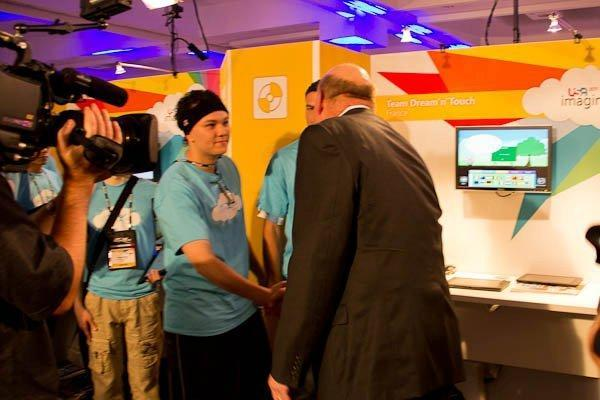
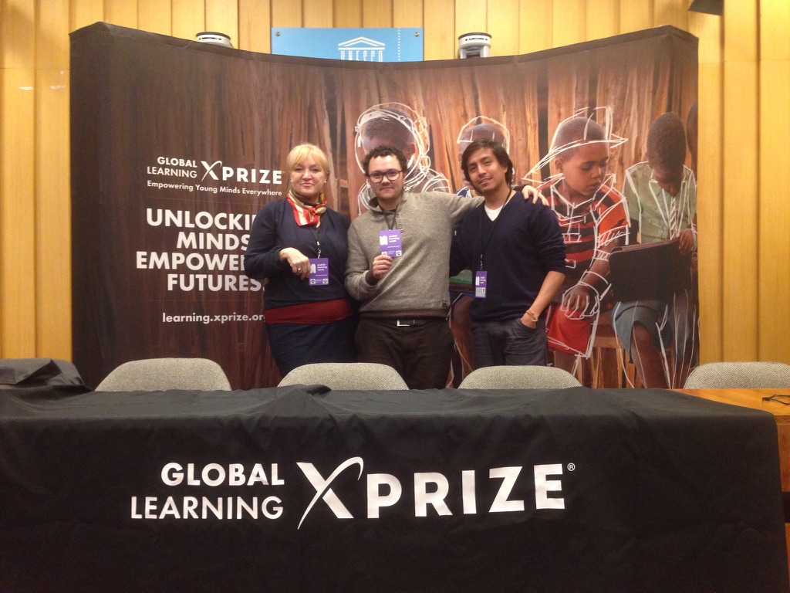

Find out why investors will pass on your deck, before you send it.
Riley's investor brain scores it in 2 minutes, free, inside your Claude.
- $200Kraised in under 5 days for one of his startups
- Hundredsof founder pitch decks reviewed
- $1.3M+made by founders he coached in 2025
You get one shot with each investor. A weak deck doesn't get feedback, it gets silence. Find out what they'll think and never tell you. Watch how Riley tears down a real deck, then pick your path.
Live session: a founder raising $1M brings her deck. PSD, the 10-slide cheat code, NECK, and which investors to target.
▶Watch what founders say about Riley11 short clips · 2x revenue, "best decision I ever made", "nothing comes close"↓Get Riley's investor brain on Claude now
Not a standard framework. These are Riley's own criteria. You won't find them anywhere else.
They run inside your Claude. You get a score out of 100 across the 10 things investors check, and the 3 reasons they'd pass.
The score, not the fix. See the 3 steps below.
Free Deck Diag now →Skip the AI, get Riley's "investor brain" live
- ✓Daily Q&A with Riley, answered async
- ✓Founders raising and selling, at your stage
- +Limited bonus: a private 30-minute Deck Fix with Riley. $199 on its own.
The Deck Fix bonus is for the first 100 members only. Run the free diagnosis first, so Riley starts from your score.
Get Riley live →Founders don't hire Riley twice by accident.
2x revenue in a few months. 3 to 4 times the first goal. "Nothing comes close." Hear it from them, in their own words.
-
▶Clip coming2x monthly revenue
5 to 15 s"I'm going to make twice as much in a month as I was doing when I met Riley a few months ago."
SimonEmail marketing agency owner, Quebec -
▶Clip comingLive deck teardown
5 to 15 s"I walk away with concrete things to do. You had points that were different from what I've heard in the past."
Founder raising $1MCreator economy, live deck session -
▶Clip coming"Best decision I ever made"
5 to 15 s"After spending over $10,000 on coaching before, I instantly saw the value. Best decision I ever made."
YoussefFounder, after $10K+ on other coaches -
Weeks of work in hours
"It's normally three, four weeks before someone you've hired brings a fresh perspective. Riley gets there in a few hours."
BellaTech founder and product leader -
▶Clip comingLive deck call
5 to 15 s"It's perfect. All the strategies and advice I can use to get started."
Founder, pitch deck callPre-seed startup, live session -
▶Clip coming3 to 4x his first goal
5 to 15 s"On the first month we set some goals. And we did something like three or four times that goal."
OliverExited founder, Agence Ricochet -
▶Clip coming"Nothing comes close"
5 to 15 s"I've invested in six, seven, eight different coaching programs. Nothing comes close to what Riley has to offer."
SimonAgency owner, 6 to 8 programs before -
▶Clip comingProblem clarified, product shipped
5 to 15 s"Riley was amazing at really trying to clarify the problem that I was trying to solve."
Tim BeattieCo-founder and CEO, Stellafai -
▶Clip coming"I wouldn't be here without him"
5 to 15 s"Riley has been a huge hand in that. I wouldn't be able to be here if it wasn't for him."
NoelFounder, service business -
▶Clip coming"A beast, a legend"
5 to 15 s"If you doubt, don't. This guy is a beast, a legend. Go for it."
SamuelFounder -
▶Clip coming"You will not regret it"
5 to 15 s"If you're on the fence about taking Riley as your coach, you can stop thinking. Take it."
OrelFounder
How the free diagnosis works
- Click "Free Deck Diag now". Claude opens with the prompt already typed. Don't send it yet.
- Attach your pitch deck (PDF) with the paperclip or by dragging it in. Then press send.
- Answer 2 or 3 quick questions (your raise, your revenue, your team). You get your score and a link to your report.
Using the Claude app, or the button didn't open it? Copy the prompt and paste it into a new chat.
Your deck stays in your own Claude account. Nothing is sent to Riley.
The 10 things investors check
- 1One-liner, in your customers' words
- 2A R.U.D.E. problem: painkiller or vitamin?
- 3The problem in numbers: money to grab or to save
- 4The size of the opportunity (the Tesla rule)
- 5Solution: benefits, not the recipe, and your MSG
- 6Distribution: how you reach the market
- 7Competition: FCMB and the gap
- 8Why you: founder-market fit (NECK)
- 9The ask
- 10Deck discipline: the first date
Why this isn't another deck scorer
Other tools grade how your slides look against a generic template. This one runs Riley's own criteria, built from years in the room with investors:
- ✓Pitched his startup to Steve Ballmer while he was CEO of Microsoft
- ✓Competed for $1M in the Global Learning XPRIZE, funded by Elon Musk (2016)
- ✓Raised $200K in under 5 days for one of his startups
- ✓Reviewed hundreds of founder pitch decks as a software engineer turned startup advisor


You need a Claude account. The diagnosis gives you the score, not the fix. The fix is what Riley does with founders in his community.
P.S. Pitching soon? Run the free diagnosis tonight and see your deck the way an investor will. If you'd rather have Riley read it himself, grab one of the 80 of 100 founding seats while the Deck Fix bonus lasts.